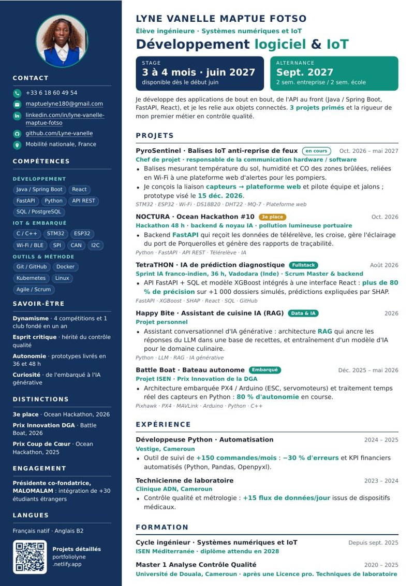

Ma vision : orchestrer chaque transition
Chaque révolution industrielle a changé la façon de produire. Je me place à la jonction de la quatrième : là où le matériel, le logiciel et les données se rejoignent.
Compétences
Une chaîne complète : capteurs et firmware, services et interfaces, données et déploiement.
Logiciel et web
- Java / Spring Boot
- React
- Microservices
- API REST
- FastAPI
- Python
- SQL / PostgreSQL
Données et IA
- Pandas
- XGBoost
- SHAP
- IA générative / RAG
- Vision par IA
- MLP
- FFT 2D / signal
- Simulation temps réel
Embarqué et IoT
- C / C++
- STM32
- FreeRTOS
- ESP32
- Arduino
- Pixhawk / PX4 / MAVLink
- ArduPilot
- VHDL
Protocoles et sécurité
- UART
- SPI
- CAN
- I2C
- BLE / Bluetooth
- Wi-Fi
- Sécurité IoT
DevOps et méthode
- Linux
- Git / GitHub / GitLab
- Docker
- Kubernetes
- Terraform
- Agile / Scrum
Notions
- Angular
- .NET
- Azure
- Node.js
Projets
Du plus récent au plus ancien. Ouvre un projet pour voir le problème, ma solution, mon rôle et les technologies.
Parcours
Formation, expériences et engagement.
Formation et expériences
- Depuis sept. 2025
Cycle ingénieur, ISEN Méditerranée
Systèmes numériques et IoT. Diplôme attendu en 2028.
- Depuis 2025
Tutorat en mathématiques et physique
+5 élèves accompagnés, hausse moyenne de 20 % de leurs notes.
- 2024 – 2025
Développeuse Python, Vestige (Cameroun)
Outil d'automatisation du suivi de +150 commandes par mois, 30 % d'erreurs en moins.
- 2023 – 2024
Technicienne de laboratoire, Clinique ADN
Analyse de +15 flux de données par jour issus de dispositifs médicaux, maintenance préventive du parc matériel.
- 2020 – 2025
Master 1 Analyse Contrôle Qualité, Licence pro. Techniques de laboratoire
Université de Douala, Cameroun.
Projets phares, distinctions et engagement
- Oct. 2026
Lauréate, Ocean Hackathon #10 Toulon : NOCTURA
3e place. Backend FastAPI et noyau IA d'un système qui réduit la pollution lumineuse du port de Porquerolles. Deuxième participation, deuxième prix.
- Oct. 2026 – mai 2027
Chef de projet, PyroSentinel
Balises IoT pour prévenir la reprise des feux de broussailles, reliées en Wi-Fi à une plateforme web cartographique. Responsable de la communication hardware / software.
- 2026
Garage Week, avec Les Alchimistes
Sécurisation d'une zone de tri en une semaine : détection par IA du port des EPI et barrière motorisée.
- Depuis fév. 2026
Présidente co-fondatrice, MALOMALAM
Club d'intégration de +30 étudiants étrangers, organisateur de l'Écho des cultures à l'ISEN.
- Début 2026
Formation à la création d'entreprise
Montage d'un business plan complet.
- 2025 – 2026
Prix Innovation de la DGA, Battle Boat
Bateau autonome programmé pour une course officielle.
- Depuis déc. 2025
Membre, ISEN Engineering
Pôle ingénierie de l'école.
- Oct. 2025
Prix Coup de Cœur, Ocean Hackathon (Marine Nationale) : NEREI
9e édition, Toulon. Simulation de détection de pollution marine par drone, alimentée par des données météo traitées en temps réel.
Mon CV
Développement logiciel et IoT, sur une page. Deux versions ciblées existent aussi, selon le poste.

Développement logiciel & IoT
Mes projets les plus marquants, dont NOCTURA et PyroSentinel, mes expériences et mon savoir-être. Les liens et le QR code du PDF mènent directement à ce portfolio.
Versions ciblées :
Travaillons ensemble
Je cherche un stage de 3 à 4 mois dès juin 2027, ou une alternance dès septembre 2027 (rythme 2 semaines en entreprise / 2 semaines à l'école). Ton message arrive directement dans ma boîte mail.